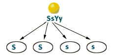

Dihybrid Cross
Tutorial to help answer the question
Problem 1: Predicting combinations of alleles in gametes of plants heterozygous for two traits.
| A pea plant is heterozygous for both seed shape and seed color. S is the allele for the dominant, spherical shape characteristic; s is the allele for the recessive, dented shape characteristic. Y is the allele for the dominant, yellow color characteristic; y is the allele for the recessive, green color characteristic. What will be the distribution of these two alleles in this plant's gametes? |
Assortment of Ss alleles
|
The gametes from the SsYy parent will receive one of the two alleles Ss. Half will receive the dominant S allele, and half the recessive s allele. |
 |
Assortment of Yy alleles
|
The gametes from the SsYy parent will also receive one of the two alleles Yy.
Half will receive the dominant Y allele, and half the recessive y allele.
|

|
Possible combinations of alleles in gametes of plants heterozygous for two traits.
|
Since alleles of different traits segregate independently during gamete formation, there is the same probability that the Y (or y) allele will segregate with the S allele as with the s allele.
Thus all four combinations of gametes (SY, Sy, sY, sy) are equally probable. |


University of Arizona
Friday, August 9, 1996
Contact the Development Team
http://www.biology.arizona.edu
All contents copyright © 1996. All rights reserved.